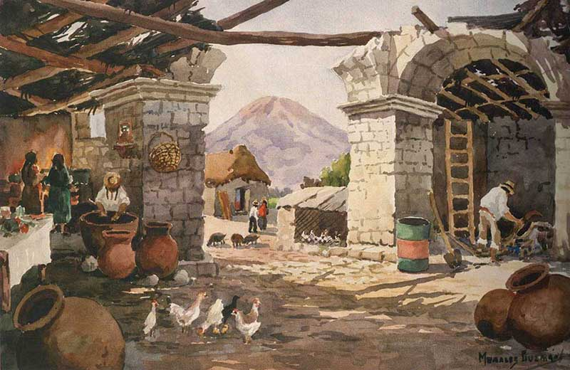
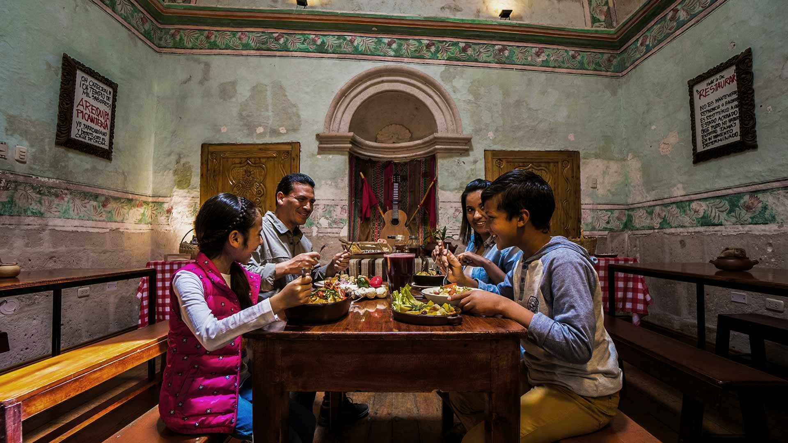

Nuestra Historia
Ubicado en el corazón de la histórica Arequipa, Sabor Arequipeño es mucho más que un simple restaurante; es una celebración de la rica herencia culinaria peruana. Fundado en 2010 por la familia Vargas, nuestro restaurante nació de la pasión por compartir los sabores auténticos de Arequipa con el mundo. La familia Vargas, originaria de esta ciudad maravillosa, ha mantenido viva la tradición de recetas que han pasado de generación en generación. Desde nuestros inicios, hemos buscado ofrecer una experiencia gastronómica que combine ingredientes frescos y locales con técnicas tradicionales. Cada plato en nuestro menú es una obra maestra que refleja el amor y el cuidado que ponemos en la cocina. Nuestro objetivo es no solo alimentar, sino también contar historias a través de cada bocado.
Nuestra Mision
En Sabor Arequipeño, nuestra misión es preservar y promover la gastronomía arequipeña en un ambiente cálido y acogedor. Creemos en la importancia de ofrecer un servicio excepcional y platos que no solo satisfagan el paladar, sino que también enriquezcan la experiencia cultural de nuestros clientes. Nos esforzamos por ser un punto de referencia en Arequipa para aquellos que buscan disfrutar de una comida auténtica y memorable.
Nuestros Platillos
- Rocoto Relleno: Pimientos picantes rellenos de carne de res y cerdo, cocidos a la perfección con una salsa deliciosa.
- Adobo Arequipeño: Un estofado de cerdo marinado en especias locales y cocido lentamente para obtener un sabor profundo y robusto.
- Ceviche de Camarón: Camarones frescos marinados en jugo de limón con cebolla roja, cilantro y ají, servido con chifles crocantes.